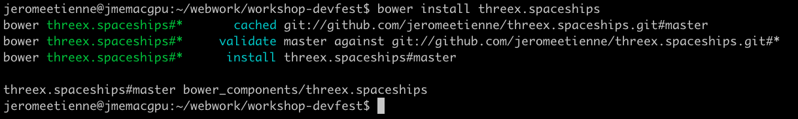

Flying Spaceships
A Mini Game in THREE.js
Meta
- present more the workshop
- what we gonna do
- how we gonna do it
- 1h15... it gonna be fast
- but we can manage :)
- link all iframe to a viewsource
- dont worry all in on github
- you can redo it at home
- github repo
Expected Final Result
What Is Yeoman ?
- Modern Workflow for WebApps
- homepage
Using Yeoman ?
- Optional
- Much Faster with it tho
- Time is limited!
- YES
Installing yeoman
sudo npm install -g yo
Installing three.js Generator
usefull to install three.js boilerplate
sudo npm install -g generator-threejs-boilerplate
Project Directory
create it
mkdir workshop-devfest
go in
cd workshop-devfest
Generate Three.js Boilerplate
yo threejs-boilerplate

Try Three.js Boilerplate
make server then goto http://127.0.0.1:8000/
Cool But Rather empty...
Let's Add SpaceShips!
threex spaceships
Wait!
What is threex ?
What is threex ?
threex Support modern workflows
- bower for package management
- require.js for dependancies
- yeoman for scaffolding
All Optional
- as in NOT REQUIRED :)
- free to use something else if you wish
- only there for convenience
Back To SpaceShips...
threex spaceships with bower
bower install threex.spaceships

Now it is in bower_components/threex.spaceships/
Rather Easy...
threex modules with require.js
- Most threex extension support require.js
- Convention:
package.require.jsat project root - require this file to load the module
Required ?
- Optional
- All free to pick another tech if you wish
- Faster to dev tho
threex spaceships with require.js
Find require.js call in the header and put that
require([ 'bower_components/threex.spaceships/package.require.js'
], function(){
// ...
});
Done... not too hard
Now Let's Use SpaceShips
The code to add
THREEx.SpaceShips.loadSpaceFighter03(function(object3d){
scene.add(object3d)
})
And the model is in the scene.
Well almost.. just a wing :)
Lets remove the cube
Better!!
Grey Background ? Not Too Shabby
Let's add Stars!
See ?
How ? with a environmantal sphere
- Large Sphere
- we are at it center
- we see the inside of it
- with a proper texture it does the tricks
The Texture
Part of threex.spaceships module
The Code
var geometry = new THREE.SphereGeometry(90, 32, 32)
var url = 'bower_components/threex.planets/examples/images/galaxy_starfield.png'
var material = new THREE.MeshBasicMaterial({
map : THREE.ImageUtils.loadTexture(url),
side : THREE.BackSide
})
var starSphere = new THREE.Mesh(geometry, material)
scene.add(starSphere)
- a geometry
- a material
- then a mesh
So we got a ship in space...
Where are the Planets ?
Let's add a moon
- available in threex.planets
- blog post explaining internals here
- with bower and require.js again
Earth demo
Earth, cloud, atmosphere, stars, moon, shadow
All planets
based on planetpixelemporium
threex planets with bower
bower install threex.planets

Now it is in bower_components/threex.planets/
Rather Easy...
threex planets with require.js
Find require.js call in the header and put that
require([ 'bower_components/threex.planets/package.require.js'
], function(){
// ...
});
Done... not too hard
The Code
var moonMesh = THREEx.Planets.createMoon()
scene.add(moonMesh)
The Result
It is there, i promise :)
Why is it black ?
Let's add some lights
Lights in three.js
- Ambient light
- Directional light
- Hemisphere light
- Point light
- Spot light
Basic 3 points lighting
- typical lighting
- so 1 ambient + 2 directional
- other basic lightings in threex.basiclighting
The Code
Add a ambient light
var light = new THREE.AmbientLight( 0x020202 )
scene.add( light )
Add a light in front
var light = new THREE.DirectionalLight('white', 1)
light.position.set(0.5, 0.5, 2)
scene.add( light )
Add a light behind
var light = new THREE.DirectionalLight('white', 0.75)
light.position.set(-0.5, -0.5, -2)
scene.add( light )
The Result
better, at least we see the moon :)
the spaceship disapeared again tho...
Move Space Ships Away
Put Spaceships On the Left
the code to add in model loader callback
spaceship.rotateY(Math.PI/2)
spaceship.position.x = -1
Not Bad... Let's move the player now!
Use keyboard for controls
threex.keyboardstate
- to keep the current state of the keyboard.
- github repo / demo
- blog post explaining internals here
- with bower and require.js again
Basic Usage
var keyboard = new THREEx.KeyboardState();
if( keyboard.pressed("shift+H") ){
console.log('you are pressing shift and H')
}
threex keyboardstate with bower
bower install threex.keyboardstate

threex keyboardstate with require.js
Find require.js call in the header and put that
require([ 'bower_components/threex.keyboardstate/package.require.js'
], function(){
// ...
});
Done... not too hard
Controls Player With Keyboard
The Algo
- add a function in the rendering loop
- monitor keyboard state
- move spaceship accordingly
Pitfalls
- async in spaceship loading
- speed independant of fps
The Code
// create keyboard instance
var keyboard = new THREEx.KeyboardState();
// add function in rendering loop
updateFcts.push(function(delta, now){
// only if the spaceship is loaded
if( spaceship === null ) return;
// set the speed
var speed = 1;
// only if spaceships is loaded
if( keyboard.pressed('down') ){
spaceship.position.y -= speed * delta;
}else if( keyboard.pressed('up') ){
spaceship.position.y += speed * delta;
}
})
The Result
oops it's going out
Limit SpaceShip Range
Add that in the function
if( spaceship.position.y < -1 ){
spaceship.position.y = -1
}
if( spaceship.position.y > +1 ){
spaceship.position.y = +1
}
Thus player is stopped when it goes too high, or too low